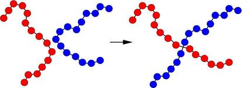

fix bond/swap command¶
Syntax¶
fix ID group-ID bond/swap fraction cutoff seed
ID, group-ID are documented in fix command
bond/swap = style name of this fix command
fraction = fraction of group atoms to consider for swapping
cutoff = distance at which swapping will be considered (distance units)
seed = random # seed (positive integer)
Examples¶
fix 1 all bond/swap 0.5 1.3 598934
Description¶
In a simulation of polymer chains, this command attempts to swap bonds between two different chains, effectively grafting the end of one chain onto another chain and vice versa. This is done via Monte Carlo rules using the Boltzmann acceptance criterion. The purpose is to equilibrate the polymer chain conformations more rapidly than dynamics alone would do it, by enabling instantaneous large conformational changes in a dense polymer melt. The polymer chains should thus more rapidly converge to the proper end-to-end distances and radii of gyration. It is designed for use with systems of FENE or harmonic bead-spring polymer chains where each polymer is a linear chain of monomers, but LAMMPS does not enforce this requirement, i.e. any bond_style can be used.
A schematic of the kinds of bond swaps that can occur is shown here:
On the left, the red and blue chains have two monomers A1 and B1 close to each other, which are currently bonded to monomers A2 and B2 respectively within their own chains. The bond swap operation will attempt to delete the A1-A2 and B1-B2 bonds and replace them with A1-B2 and B1-A2 bonds. If the swap is energetically favorable, the two chains on the right are the result and each polymer chain has undergone a dramatic conformational change. This reference provides more details on how the algorithm works and its application: (Sides).
The bond swapping operation is invoked each time neighbor lists are built during a simulation, since it potentially alters the list of which neighbors are considered for pairwise interaction. At each reneighboring step, each processor considers a random specified fraction of its atoms as potential swapping monomers for this timestep. Choosing a small fraction value can reduce the likelihood of a reverse swap occurring soon after an initial swap.
For each monomer A1, its neighbors are examined to find a possible B1 monomer. Both A1 and B1 must be in the fix group, their separation must be less than the specified cutoff, and the molecule IDs of A1 and B1 must be the same (see below). If a suitable partner is found, the energy change due to swapping the 2 bonds is computed. This includes changes in pairwise, bond, and angle energies due to the altered connectivity of the 2 chains. Dihedral and improper interactions are not allowed to be defined when this fix is used.
If the energy decreases due to the swap operation, the bond swap is accepted. If the energy increases it is accepted with probability exp(-delta/kT) where delta is the increase in energy, k is the Boltzmann constant, and T is the current temperature of the system. Whether the swap is accepted or rejected, no other swaps are attempted by this processor on this timestep.
The criterion for matching molecule IDs is how bond swaps performed by this fix conserve chain length. To use this features you must setup the molecule IDs for your polymer chains in a certain way, typically in the data file, read by the read_data command. Consider a system of 6-mer chains. You have 2 choices. If the molecule IDs for monomers on each chain are set to 1,2,3,4,5,6 then swaps will conserve chain length. For a particular momoner there will be only one other monomer on another chain which is a potential swap partner. If the molecule IDs for monomers on each chain are set to 1,2,3,3,2,1 then swaps will conserve chain length but swaps will be able to occur at either end of a chain. Thus for a particular monomer there will be 2 possible swap partners on another chain. In this scenario, swaps can also occur within a single chain, i.e. the two ends of a chain swap with each other.
Warning
If your simulation uses molecule IDs in the usual way, where all monomers on a single chain are assigned the same ID (different for each chain), then swaps will only occur within the same chain. If you assign the same molecule ID to all monomers in all chains then inter-chain swaps will occur, but they will not conserve chain length. Neither of these scenarios is probably what you want for this fix.
Warning
When a bond swap occurs the image flags of monomers in the new polymer chains can become inconsistent. See the dump command for a discussion of image flags. This is not an issue for running dynamics, but can affect calculation of some diagnostic quantities or the printing of unwrapped coordinates to a dump file.
This fix computes a temperature each time it is invoked for use by the Boltzmann criterion. To do this, the fix creates its own compute of style temp, as if this command had been issued:
compute fix-ID_temp all temp
See the compute temp command for details. Note that the ID of the new compute is the fix-ID with underscore + “temp” appended and the group for the new compute is “all”, so that the temperature of the entire system is used.
Note that this is NOT the compute used by thermodynamic output (see the thermo_style command) with ID = thermo_temp. This means you can change the attributes of this fix’s temperature (e.g. its degrees-of-freedom) via the compute_modify command or print this temperature during thermodynamic output via the thermo_style custom command using the appropriate compute-ID. It also means that changing attributes of thermo_temp will have no effect on this fix.
Restart, fix_modify, thermo output, run start/stop, minimize info:
No information about this fix is written to binary restart files. Because the state of the random number generator is not saved in restart files, this means you cannot do “exact” restarts with this fix, where the simulation continues on the same as if no restart had taken place. However, in a statistical sense, a restarted simulation should produce the same behavior. Also note that each processor generates possible swaps independently of other processors. Thus if you repeat the same simulation on a different number of processors, the specific swaps performed will be different.
The fix_modify temp option is supported by this fix. You can use it to assign a compute you have defined to this fix which will be used to compute the temperature for the Boltzmann criterion.
This fix computes two statistical quantities as a global 2-vector of output, which can be accessed by various output commands. The first component of the vector is the cumulative number of swaps performed by all processors. The second component of the vector is the cumulative number of swaps attempted (whether accepted or rejected). Note that a swap “attempt” only occurs when swap partners meeting the criteria described above are found on a particular timestep. The vector values calculated by this fix are “intensive”.
No parameter of this fix can be used with the start/stop keywords of the run command. This fix is not invoked during energy minimization.
Restrictions¶
This fix is part of the MC package. It is only enabled if LAMMPS was built with that package. See the Making LAMMPS section for more info.
The settings of the “special_bond” command must be 0,1,1 in order to use this fix, which is typical of bead-spring chains with FENE or harmonic bonds. This means that pairwise interactions between bonded atoms are turned off, but are turned on between atoms two or three hops away along the chain backbone.
Currently, energy changes in dihedral and improper interactions due to a bond swap are not considered. Thus a simulation that uses this fix cannot use a dihedral or improper potential.
Related commands: none
Default: none
(Sides) Sides, Grest, Stevens, Plimpton, J Polymer Science B, 42, 199-208 (2004).